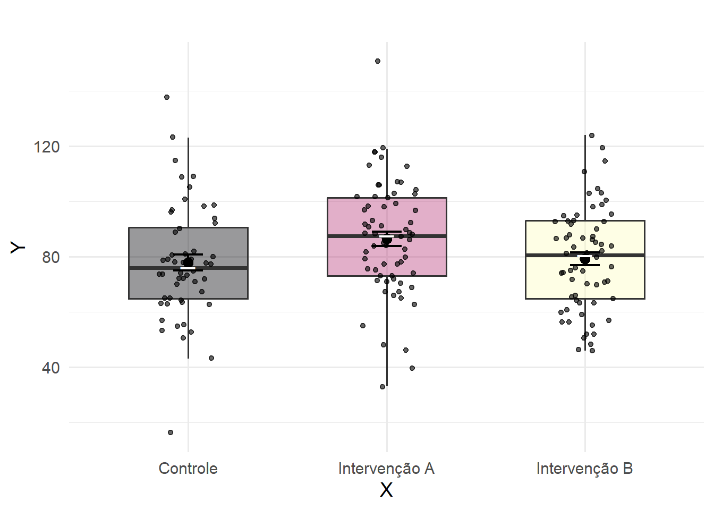
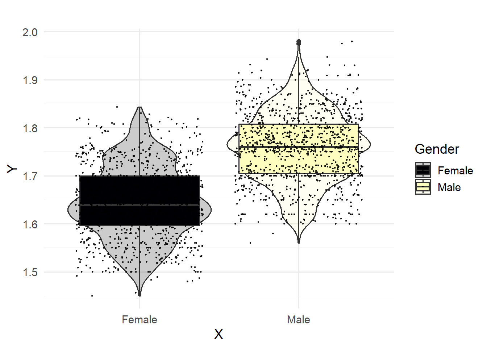

# Aviso: Essas notas de aula são exclusivas para uso como guia do curso, porém não substituem as referências e materiais de apoio. Quaisquer erros são de responsabilidade dos autores.
# Esse material é protegido por ser propriedade intelectual.
# Logo, ao reproduzir, divulgar ou distribuir notifique as autorias.
# Caso encontre erros, contate os autores imediatamente. Via e-mail ryallmeida@gmail.comApostilas dos códigos utilizados nas aulas “Curso: R para Saúde” realizado em parceria entre o Departamento de Ciência Política e o Programa de Pós-graduação em Nutrição da Universidade Federal de Pernambuco. Curso ministrado pelos docentes: Prof.ª Dr.ª Maria Soares e o Prof. Dalson Britto e monitorado por Ryan Almeida e Carla Cavalcante
Motivos para você escolher a Linguagem R
Linguagem com desenvolvimento comunitário. Logo, constatemente ela se reinventa e se adapta as possibilidades que ou a vida academica ou o mercado pedem.
Linguagem de programação aberta, então qualquer pessoa pode baixá-la e começar a codar imediatamente e de graça. Diferentemente de outros Softwares pagos comos SPPS ou STATA.
Mercado de trabalho tem deteminado algumas hardskills que você deve saber e grandes empresas estão cada vez mais interessados em profissionais que saibam usar R.
Bizu da madrinha: presta atenção nesses atalhos que você certamente vai usar quando tiver codando
| Atalho | Função |
|---|---|
| CTRL + ENTER | Executa a(s) linha(s) selecionada(s) no script |
| ALT + - | Insere o operador de atribuição (<-) |
| CTRL + SHIFT + M | Insere o operador pipe (%>%) |
| CTRL + 1 | Move o cursor para o script |
| CTRL + 2 | Move o cursor para o console |
| CTRL + ALT + I | Cria um chunk em um documento R Markdown |
| CTRL + SHIFT + K | Compila (renderiza) um arquivo R Markdown |
| ALT + SHIFT + K | Abre a janela com todos os atalhos disponíveis |




Esses são uns dos muitos pontenciais do R. Se te convencemos a gostar dessa liguagem, continua lendo essa apostila.
A linguagem R, assim como outras existentes tem como possibilidade a criação de objetos. Vejamos alguns exemplos simples
Em cada exemplo, usamos o símbolo de atribuição (“<-”). No R, também é possível usar ‘=’ com a mesma função, mas não aconselhamos porque as vezes pode confundir quem está começando.
No primeiro exemplo, temos um objeto do tipo numérico. No segundo e terceiro temos um vetor, pois concatena informações.
É possível acessar os objetos criados no R. Basta usar o comando
ls(). E para removê-los caso precise desocupar slots de
memória, use:
Detalhe importante: o R é uma linguagem q-sensitiva, ou seja, “cores’ é diferente de”Cores” (palavra com letra minúscula vs palavra com letra maiúscula).
Outro detalhe importante: comente seus códigos com #, converse consigo mesmo, pense no seu “eu do futuro” lendo um código escrito por você no passado. Somos muito incopetentes quando começamos algo novo, você pode cometer erros ao codar, e principalmente quando está balisando estatística e ciência de dados com programação. Sempre tente descrever brevemente o que está fazendo na linha de seu script.
Álém disso, também é possível acessar os objetos usando a função print() Note como funciona:
## [1] 10.5678## [1] 10.5678## [1] 11| Tipo | Descrição |
|---|---|
| Numéricas (numeric) | Números inteiros ou reais, como idade, renda, número de filhos. |
| Datas (Date) | São um tipo especial de variável numérica. |
| Categóricas (factor) | Variáveis qualitativas para as quais não é possível atribuir um valor numérico, como sexo, religião, estado civil ou opinião. |
| Categóricas ordenáveis (ordered) | Variáveis categóricas cujas categorias podem ser hierarquizadas, como grau de escolaridade ou respostas ordenadas. |
| Texto (character) | Características puramente individuais que não podem ser utilizadas para categorizar os indivíduos, usadas em análises qualitativas. |
| Booleanas (logical) | Variáveis cujos valores podem ser VERDADEIRO ou FALSO; no R, TRUE ou FALSE. |
Veja algumas situações-problemas, que talvez te ajudem a dar luz no seu cerébro caso não tenha entendido ainda. Imagine que você coletou dados de 5 pessoas e, para cada uma, tem as seguintes variáveis:
| Variável | Descrição |
|---|---|
| idade | é o número propriamente dito |
| data de uma entrevista | data |
| sexo | categórica (Femino, Masculino, Outro; Você tem três categorias aqui) |
| escolaridade | categórica ordenável (Porque você nâo vira doutor sem antes ter se formado no ABC) |
| relato de opinião | texto de um relato, por exemplo, o R vai entender como um character |
| fumante | booleana, ou fuma ou não fuma, ou TRUE ou FALSE, ou SIM ou NÃO, note que só existe duas possibilidades e nada mais, essa é a essência de uma variável booleana |
| Operador | Significado | Tipo |
|---|---|---|
| + | Soma | Aritmético |
| - | Subtração | Aritmético |
| / | Divisão | Aritmético |
| * | Multiplicação | Aritmético |
| ^ | Exponenciação | Aritmético |
| > | Maior que | Relacional |
| < | Menor que | Relacional |
| >= | Maior ou igual a | Relacional |
| <= | Menor ou igual a | Relacional |
| == | Igual a | Relacional |